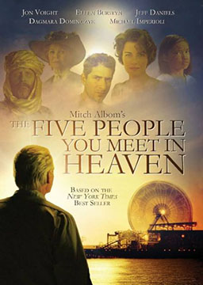

双语小说
收录中英文双语小说300多部，包括世界经典名著、社会小说、悬疑小说等短篇和长篇小说，可按照初中难度、高中难度和大学难度分类阅读，每部小说都有分段中英文对照，点击单词可查看中文翻译。

你在天堂里遇见的五个人 (The Five People You Meet in Heaven)
作者：米奇·阿尔博姆 (Mitch Albom) [美国]
从“结局”开始讲起，游乐场维修工爱迪在83岁生日那天，为了挽救在突发事故中身处险境的女孩而丧生。爱迪初进天堂时遇见了五个或熟悉或陌生的人，他们讲述了五个不同的故事，蓝皮人带领爱迪回忆童年，上尉带领爱迪回忆参战的岁月，鲁比带领爱迪回忆与父亲的感情，玛格丽特带领爱迪回忆爱情，小女孩让爱迪面对自我，最终让他明白自己一生的价值后安然离去。故事有两条主线，一条是爱迪在天堂里与五个人的相遇的情景，另一条则描述了从爱迪出生那天到去世一生中的数十个生日场景。每次遇见一个人讲完一个故事之后用“第一（二、三、四、五）课”作为总结，米奇沿用了《相约星期二》中的课堂模式，以平常的故事平淡的语言来阐释深刻的人生哲理和感悟。
你当像鸟飞往你的山 (Educated: A Memoir)
作者：塔拉·韦斯特弗 (Tara Westover) [美国]
奇迹！一部新人处女作，上市第一周即登上《纽约时报》畅销榜，至今已累计80周，仍高居Top1，全美销量破百万册， 比尔·盖茨年度荐书第一名。内容简介：这是一个与命运作斗争的故事。塔拉出生在美国爱达荷州的山区，家中包括她一共有七个人，她是全家最小的，家中的小孩子都没有去上学。有关部门也不知道他们的存在，甚至没有出生证明，就像是与社会脱轨的原始人一样。每天晚上父亲就会向孩子们朗读《圣经》，父亲固执地认为外面的世界是邪恶的，是险恶的。学校也是一个让世人堕落的地方，要是孩子在学校里接受教育还不知道会变成什么鬼样子呢！随着塔拉慢慢长大，她才意识到，原来父亲也不都是对的，社会没有他说的那么可怕，学校也不是让人堕落的地方。于是产生了一个想法：我也想去上学。后来的塔拉以优异的成绩去了剑桥，在剑桥下定决心的研究历史，懂得了更多，也获得了更多的自信。但是生活没有想象的这么美好，一直在塔拉心中的魔鬼出现了，她根深蒂固的记忆和现实开始冲突。长眠不醒 (The Big Sleep)
作者：雷蒙德·钱德勒 (Raymond Chandler) [美国]
这次的案件，有些诡异。菲利普·马洛第一次登场，面对的就是这样一个家庭。一个卧病在床多年的将军，一对古怪的女儿。将军性情乖戾。一对女儿，一个投怀送抱主动诱惑，一个暴躁张扬恐吓威胁。临死，将军放得下积累半生的家财，也放得下两个亲生女儿，但是却放不下失踪了的女婿？老迈而富有的将军请马洛去寻找他的女婿，他的两个女儿却一直阻止马洛采取进一步行动，花痴一样的妹妹甚至偷偷爬到马洛的床上。诱惑力十足的姐姐则送上双唇。马洛是个只认识钱的混混儿、最有情意的流氓、租售淫秽书籍的同性恋，本来只是找一个不见的人，结果确见了这么多人。他要一个一个和他们打交道，用他利如刀锋的语言和拳头、手枪。走遍美国 (Family Album U.S.A.)
作者：普伦蒂斯霍尔公司 (Prentice Hall, INC.) [美国]
数十位英语专家和作者通力合作之下，费了8年（1983-1991）的时间，制作完成这部划时代的巨作。内容以住在纽约的一家三代人的生活为中心，内容涉及美国各地风土人情、社会生活的许多方面。突出了最新的交际教学法，与情景式教学法和句型式教学法相比是一大突破。，同时兼顾提高阅读与写作能力。本教材也可用作参加托福考试的准备教材。超能陆战队 (Big Hero 6)
作者：迪士尼 (Disney) [美国]
在一个融合东西方文化（旧金山+东京）的虚构大都市旧京山中，一位精通机器人技术的小神童阿宏发现，这座充斥高新技术的城市正遭遇着一场犯罪危机，为了拆穿阴谋拯救家园，他将与机器人大白，还有一伙生拉硬凑的菜鸟团队组成“超能陆战队”联盟，共同作战抗击罪恶。富兰克林自传 (The Autobiography of Benjamin Franklin)
作者：本杰明·富兰克林 (Franklin Benjamin) [美国]
本书是美国迄今为止最重要、读者最多的自传作品之一，无论从自传的角度还是从美国思想史的角度来看，都具有划时代的意义。富兰克林以拉家常的方式，把自己成功的经验和失败的教训娓娓道来，整部自传在通俗易懂的叙述中不时会有睿智和哲理的火花，开创了美国传记文学的优良传统，使自传成为一种新的文学体裁。《富兰克林自传》是在读者如饥似渴的等待中出版的，一经问世被一抢而光。世界各地的青年人都希望学习富兰克林成功的秘诀，他们把这部书当成“人生指导”读物。闪灵 (The Shining)
作者：斯蒂芬·埃德温·金 (Stephen Edwin King) [美国]
令人窒息的恐怖经典！“恐怖大师”斯蒂芬·金的巅峰之作！小男孩丹尼天生具有一种超感预知的能力——“闪灵”。他带着不祥的梦兆，随父亲杰克·托兰斯和母亲温迪来到了科罗拉多州深山中的好望宾馆——杰克为生计所迫，不得不担任漫长冬季的宾馆看守人。自从杰克一家住进好望宾馆后，离奇诡异的事件接二连三地发生：被杀虫剂杀死的黄蜂成群复活，剪成动物形状的树篱蠢蠢欲动，无人的房间里响起咚咚的脚步声，杰克无意中在地下室的旧纸堆中发现了关于宾馆历史的剪报簿，沉迷其中，精神日渐委顿。空寂阴森的宾馆使一家人的内心狂躁不安，沉重怪诞的寂静中，疯狂与绝望正在蔓延……丹尼的“闪灵”越来越强烈了。在这大雪封山、与世隔绝的好望宾馆中，除了托兰斯一家人，黑暗深处还有谁在与他们共享宾馆呢？
查理和巧克力工厂 (Charlie and the Chocolate Factory)
作者：罗尔德·达尔 (Roald Dahl) [挪威]
这是一本既写给孩子又写给大人的书。本书通过对查理和约瑟夫爷爷和其他四个幸运儿一起参观旺卡先生的巧克力工厂时，所发生的一些离奇的故事的叙述，用生动的语言告诉了家长该如何教育孩子。本书故事情节离奇、引人入胜，是一本老少皆宜的童话读物。内容简介：小查理生长的一个小镇里有一个全世界最大的巧克力工厂，工厂由一个伟大的巧克力发明家、制造商威利・旺卡所拥有。工厂非常神秘，大门紧锁，全镇子的人从来没有看见有人从大门进去或出来过。有一天，威利・旺卡先生发出告示，将有五位幸运的孩子获得参观巧克力工厂的特权，同时还能得到足够吃一辈子的巧克力糖和其他糖果。全世界购买旺卡巧克力的孩子都有机会。前提是藏在包装纸里的五张金券，谁获得金券谁就是幸运儿。偶然的机会，查理得到了一张金券。参观工厂的过程是一次奇特的经历。每个参观者都感到了无限着迷、狂喜、好奇、惊讶和迷惑不解。即使做最荒诞的梦也想象不出这样的事情。飞瀑而下的巧克力瀑布，流漫着棕色糖浆的河，大片大片的口香糖草地，还有牛奶糖堆成的山。工厂里的工人全是来自蛮荒丛林的酷爱巧克力的矮人。查理和四位幸运儿在旺卡先生的巧克力工厂里参观的过程中，出现了许多有趣的事情：一个孩子掉进了巧克力河，一个孩子变成了蓝莓，一个孩子掉进了垃圾槽，一个孩子被电视传送成了一个手掌大小。而在最后，小查理还得到了一个最大的惊喜：他将拥有威利・旺卡先生赠送他的整个巧克力工厂。
杀死伊芙3: 为我而死 (Killing Eve 3: Die for Me)
作者：卢克·詹宁斯 (Luke Jennings) [美国]
伊芙和薇拉内尔的故事，她们相互有着残暴过往，曾经深陷对方不可自拔，如今却竭力维持没有对方的生活。维伦内尔，无人问津的职业杀手，对她而言伊芙已死；伊芙，大隐隐于市的军情六处前特工，维伦内尔将永远不会找到她。一切看起来风平浪静，直到一起涉及个人的震惊死亡让两人轨迹再次相汇，而这又势必教她们付出亲朋好友乃至各自灵魂的代价。
杀死伊芙2: 没有明天 (Killing Eve 2: No Tomorrow)
作者：卢克·詹宁斯 (Luke Jennings) [美国]
伊芙以为自己杀了薇拉内尔，匆忙离开巴黎返回家中。薇拉内尔身中刀伤，在巴黎一家医院治疗。卡罗琳告诉伊芙“十二门徒”有专人负责清理残局，军情六处在巴黎的公寓一无所获。薇拉内尔伤情略有好转之后，成全了邻床病友加布里埃尔的意愿，将其杀害，逃离医院。卡罗琳重新招募伊芙，二人开始调查IT行业富豪阿利斯泰尔·皮尔的死亡案。薇拉内尔偷渡来到了英国。